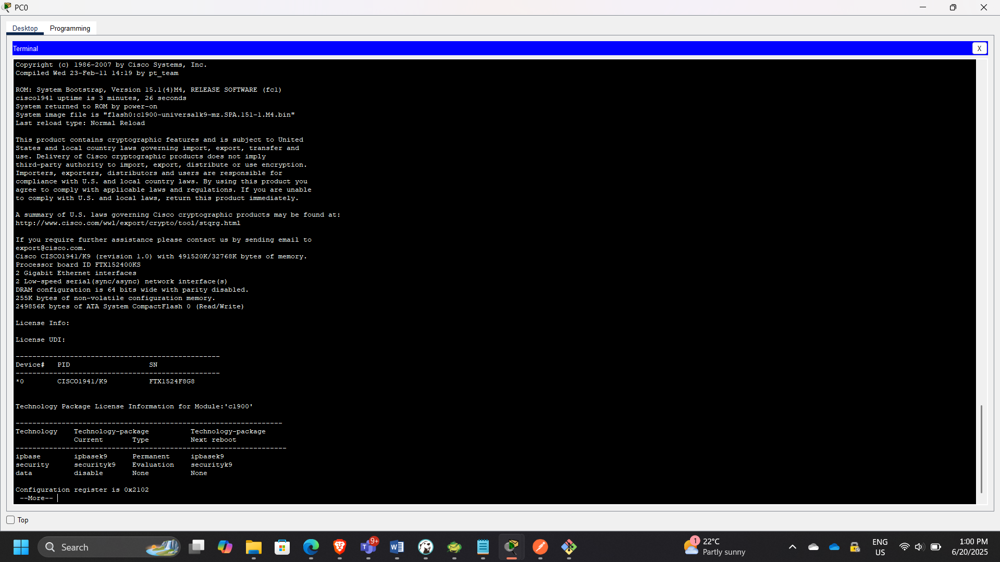
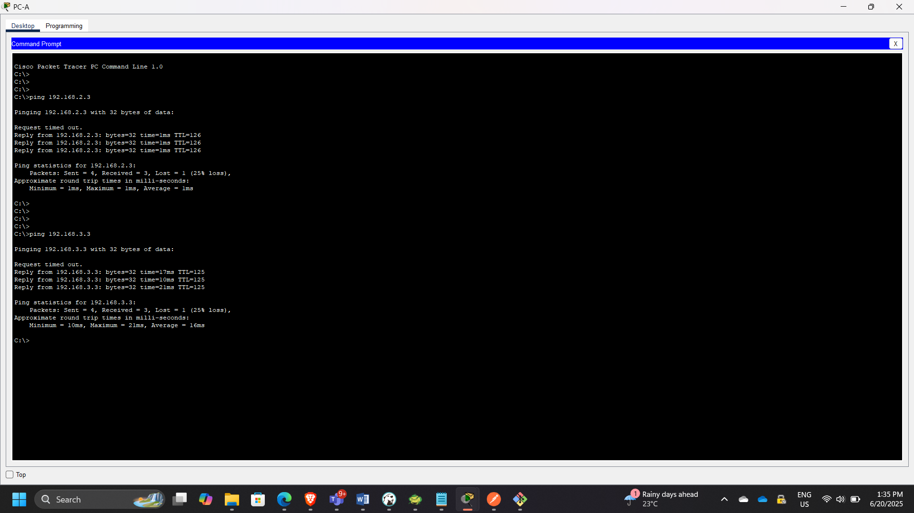
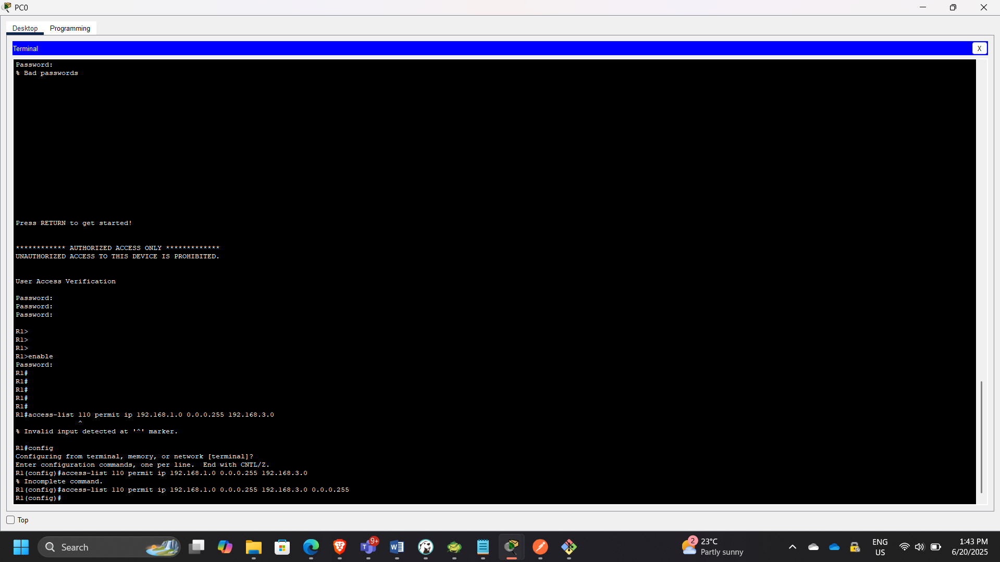
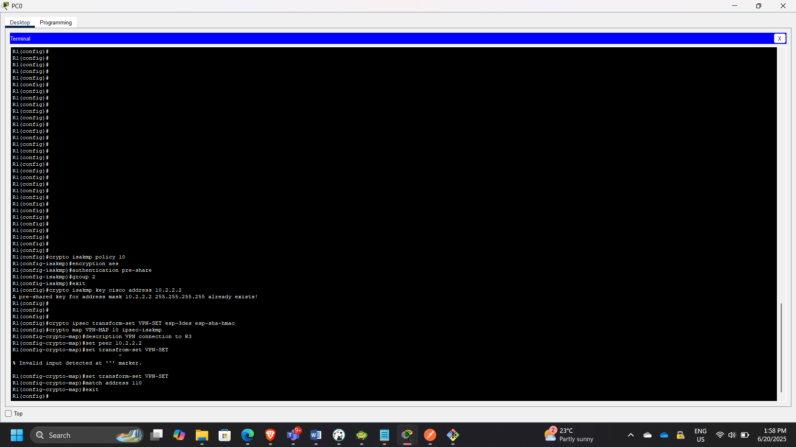
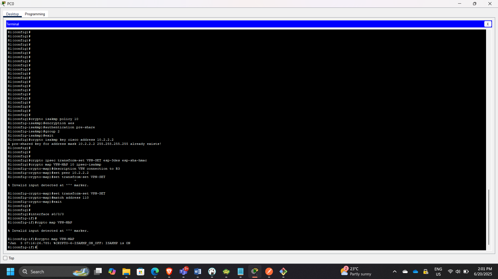
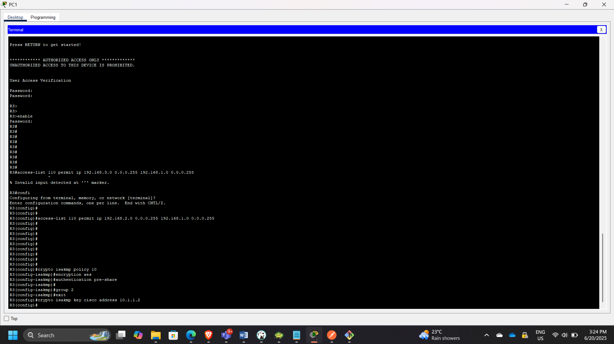
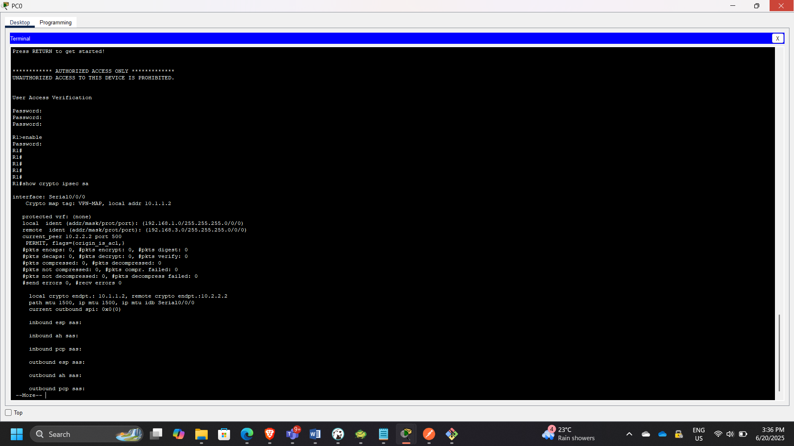
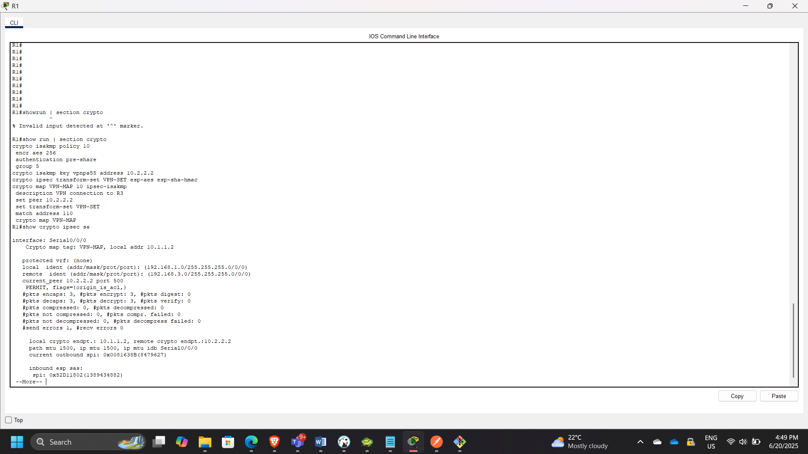

Secure Network Connectivity Architecture: Site-to-Site IPsec VPN Implementation
Project: Site-to-Site IPsec VPN Configuration & Verification
Timeline: June 2025
Role: Network & Cloud Security Engineer
Focus: Network-Layer Encryption, Secure Tunnel Establishment, IPsec & ISAKMP Configuration
Technologies: Cisco IOS, IPsec, ISAKMP (IKEv1), ACLs, Crypto Maps
Executive Summary
Designed and configured a site-to-site IPsec VPN tunnel between two remote networks using Cisco routers to secure communication over an untrusted intermediary network.
The implementation included:
- Enabling router security features
- Configuring ISAKMP Phase 1 (IKE negotiation)
- Configuring IPsec Phase 2 parameters
- Defining interesting traffic using ACLs
- Applying crypto maps to outbound interfaces
- Verifying encrypted traffic using security associations
This project demonstrates practical knowledge of encrypted network connectivity and secure inter-site communication.
Architecture Overview
The topology consisted of:
- R1 (Site A)
- R2 (Untrusted Transit Network)
- R3 (Site B)
Two remote LANs were connected securely through an IPsec tunnel established between R1 and R3.

Part 1: Enabling Security Features
Step 1: Verify Security License
Checked whether security features were enabled:
show license
Security initially disabled.

Step 2: Enable Securityk9
Enabled security package:
license boot module c1900 technology-package securityk9
Verified activation.

Repeated the same steps on R3.
Part 2: Configuring IPsec on R1
Step 1: Test Initial Connectivity
Before configuration:
Ping from PC-A → PC-C
Traffic passed in cleartext (no encryption).

Step 2: Define Interesting Traffic
Configured ACL 110 to identify LAN-to-LAN traffic:
access-list 110 permit ip
This ensures only specified traffic is encrypted.

Step 3: Configure ISAKMP (Phase 1)
Configured IKE Phase 1 parameters:
- Encryption: 3DES
- Hash: SHA
- Authentication: Pre-shared key
- DH Group
- Lifetime
Configured shared key:
crypto isakmp key cisco address

Step 4: Configure IPsec (Phase 2)
Created transform set:
crypto ipsec transform-set VPN-SET esp-3des esp-sha-hmac
Created crypto map:
crypto map VPN-MAP 10 ipsec-isakmp
set peer

Step 5: Apply Crypto Map
Bound crypto map to outbound interface:
interface Serial0/0/0
crypto map VPN-MAP

Part 3: Mirror Configuration on R3
Performed reciprocal configuration:
- Defined matching ACL
- Configured ISAKMP policy
- Configured transform set
- Created crypto map
- Applied crypto map to outbound interface

Part 4: Tunnel Verification
Step 1: Verify Before Traffic
show crypto ipsec sa
No active Security Associations.

Step 2: Generate Interesting Traffic
Ping PC-C from PC-A.
This triggered ISAKMP negotiation and IPsec tunnel creation.
Step 3: Verify Encrypted Traffic
show crypto ipsec sa
Observed:
- Encapsulated packets
- Encrypted packets
- Decapsulated packets

Step 4: Verify Uninteresting Traffic
Ping PC-B from PC-A.
No change in encryption counters — confirming only defined traffic is encrypted.

Security Concepts Demonstrated
- Network-layer encryption using IPsec
- ISAKMP (IKEv1) Phase 1 negotiation
- IPsec Phase 2 secure tunnel establishment
- Crypto map binding
- Access Control List-based traffic classification
- Secure communication across untrusted networks
Security & Architectural Relevance
This project demonstrates:
- Secure branch-to-branch connectivity
- Hybrid cloud VPN concepts
- Encryption over public infrastructure
- Controlled traffic encryption policies
- Practical understanding of tunnel establishment lifecycle
Conclusion
This exercise successfully implemented and verified a secure site-to-site IPsec VPN between two remote networks. By applying ISAKMP and IPsec configurations with defined “interesting traffic,” encrypted communication was established across an untrusted network.
The lab reinforced practical understanding of network-layer encryption, secure tunnel lifecycle, and enterprise-grade VPN deployment principles.